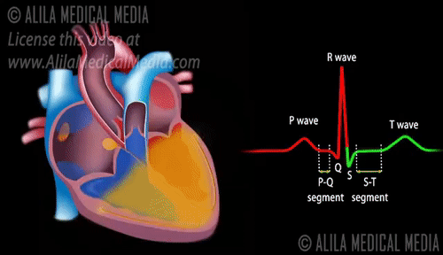
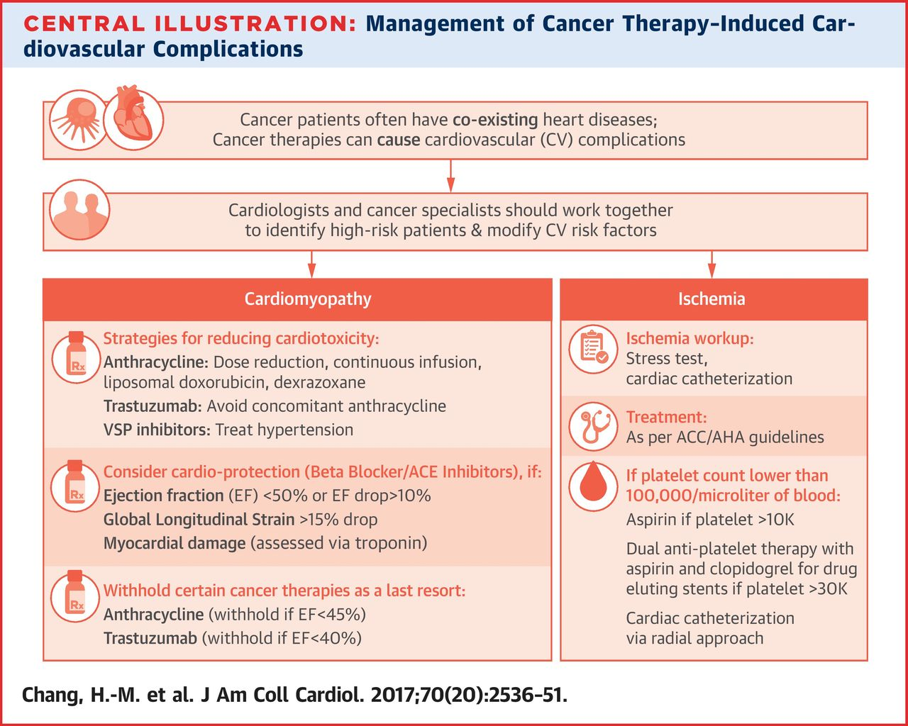

About the departmentCardiology is a branch of medicine that deals with the disorders of the heart as well as some parts of the circulatory system. The field includes medical diagnosis and treatment of congenital heart defects, coronary artery disease, heart failure, valvular heart disease and electrophysiology. An integrated facility, it has a dedicated team of cardiologists and cardiac surgeons providing comprehensive, multi-disciplinary care to patients with various heart diseases. The entire team of doctors, nurses, technicians and heart specialists ensures excellent and efficient patient care The interventional team is available round-the-clock to render prompt assistance and ensure faster recovery. Our expertise in managing even acute cardiac emergencies is well known. Our range of services includes primary and complex coronary angioplasties, stent implantation and percutaneous valvular interventions, as well as aortic valve replacement. Our dedicated electrophysiology team has vast experience in all kinds of electrophysiology studies, radio frequency ablations, pacemaker and device implantations and resynchronization therapy. Our cardiac group has developed a culture of excellence in patient care and academics with its outstanding team efforts.


|

 Twitter
Twitter Facebook
Facebook Instagram
Instagram